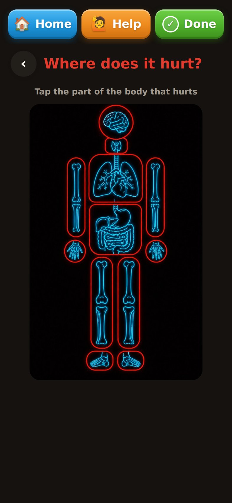
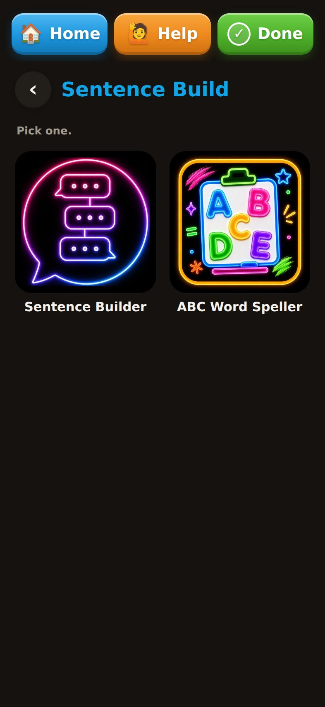
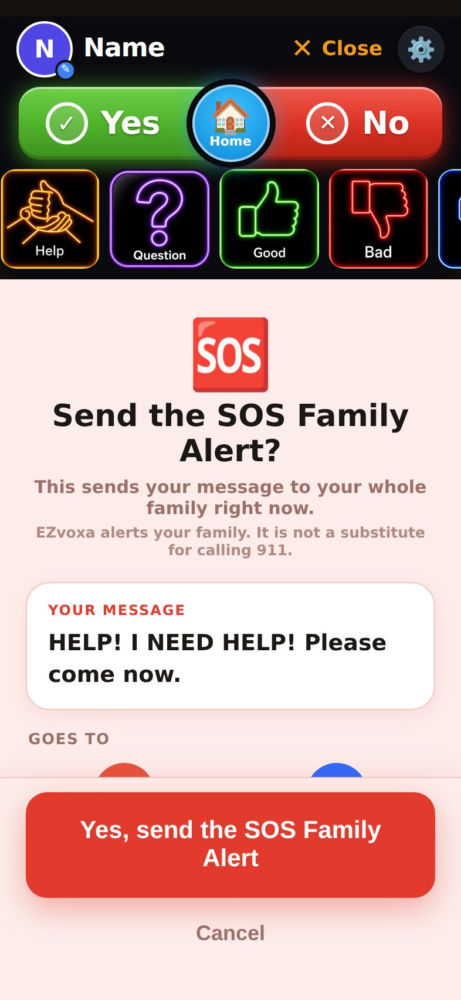

This is EZvoxa.
These are its real screens.
Phrase-first, phone-first, and deeply customizable. Sentence Build and spelling stay underneath for the moments when the traditional AAC path is useful.
The things they say all day should be close.
Yes. No. Help. Question. Good. Bad. Restroom. Thank you. More. Done. The visual cues are designed to be recognizable, age-appropriate, and fast.

The body becomes the communication surface.
The user points to where it hurts. The app then moves into follow-up questions so the conversation can continue without requiring the correct body-part word first.
See it in the demoUse the people they actually know.
Teachers, staff, therapists and familiar people can become direct visual cues. A generic symbol is not always the fastest route to recognition.

Sentence Build and the speller stay available.
EZvoxa does not compete with the traditional AAC skills a user has spent years developing. It adds a faster path for the life they are living now.

The system conforms to the child.
Photos, avatars, emojis, custom phrases, people, routines, foods, places and family language. The exact visual cue is not sacred — what works for the user is.
Photo, avatar, emoji
Choose the cue the user recognizes fastest.
Your family’s phrases
Write the way your family actually talks, not the way software expects you to.
Real relationships
Family, friends, teachers and familiar adults can be represented directly.
Keep changing it
The board can evolve as interests, routines, school life and communication needs change.

Two taps to the people the family chooses.
The public website only demonstrates the flow. It never sends a live alert. EZvoxa does not call 911 and is not a monitored emergency service.
Core communication stays useful without a subscription.
Intended free
Boards, quick phrases, Hurt, device voice, Sentence Build, spelling, caregiver editing, and Backup & Restore.
SOS Family Alert
Never part of the paid subscription.
Family connection
Family texting, inbound voice notes, cross-phone sync, and the natural voice layer.
No fake pricing or dates
Frank will publish pricing and store dates in the Founder’s Journal when they are real.